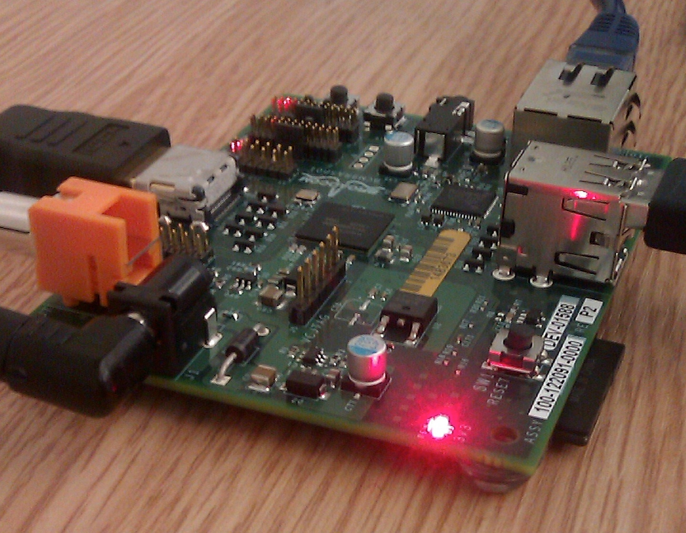
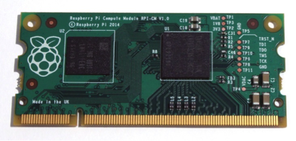

In 2006, early concepts of the Raspberry Pi were based on the Atmel ATmega644 microcontroller. Its schematics and PCB layout are publicly available. Foundation trustee Eben Upton assembled a group of teachers, academics and computer enthusiasts to devise a computer to inspire children. The computer is inspired by Acorn's BBC Micro of 1981. The Model A, Model B and Model B+ names are references to the original models of the British educational BBC Micro computer, developed by Acorn Computers. The first ARM prototype version of the computer was mounted in a package the same size as a USB memory stick. It had a USB port on one end and an HDMI port on the other.
The Foundation's goal was to offer two versions, priced at US$25 and $35. They started accepting orders for the higher priced Model B on 29 February 2012, the lower cost Model A on 4 February 2013. and the even lower cost (US$20) A+ on 10 November 2014. On 26 November 2015, the cheapest Raspberry Pi yet, the Raspberry Pi Zero, was launched at US$5.
Pre-launch:
August 2011 - 50 alpha boards are manufactured. These boards were functionally identical to the planned Model B, but they were physically larger to accommodate debug headers. Demonstrations of the board showed it running the LXDE desktop on Debian, Quake 3 at 1080p, and Full HD MPEG-4 video over HDMI.
October 2011 - A version of RISC OS 5 was demonstrated in public, and following a year of development the port was released for general consumption in November 2012.
December 2011 - Twenty-five Model B Beta boards were assembled and tested from one hundred unpopulated PCBs. The component layout of the Beta boards was the same as on production boards. A single error was discovered in the board design where some pins on the CPU were not held high; it was fixed for the first production run. The Beta boards were demonstrated booting Linux, playing a 1080p movie trailer and the Rightware Samurai OpenGL ES benchmark.
Early 2012 - During the first week of the year, the first 10 boards were put up for auction on eBay. One was bought anonymously and donated to the museum at The Centre for Computing History in Cambridge, England. The ten boards (with a total retail price of £220) together raised over £16,000, with the last to be auctioned, serial number No. 01, raising £3,500. In advance of the anticipated launch at the end of February 2012, the Foundation's servers struggled to cope with the load placed by watchers repeatedly refreshing their browsers.
Launch:
19 February 2012 - The first proof of concept SD card image that could be loaded onto an SD card to produce a preliminary operating system is released. The image was based on Debian 6.0 (Squeeze), with the LXDE desktop and the Midori browser, plus various programming tools. The image also runs on QEMU allowing the Raspberry Pi to be emulated on various other platforms.
29 February 2012 - Initial sales commence 29 February 2012 at 06:00 UTC;. At the same time, it was announced that the model A, originally to have had 128 MB of RAM, was to be upgraded to 256 MB before release. The Foundation's website also announced: "Six years after the project's inception, we're nearly at the end of our first run of development - although it's just the beginning of the Raspberry Pi story." The web-shops of the two licensed manufacturers selling Raspberry Pi's within the United Kingdom, Premier Farnell and RS Components, had their websites stalled by heavy web traffic immediately after the launch (RS Components briefly going down completely). Unconfirmed reports suggested that there were over two million expressions of interest or pre-orders. The official Raspberry Pi Twitter account reported that Premier Farnell sold out within a few minutes of the initial launch, while RS Components took over 100,000 pre orders on day one. Manufacturers were reported in March 2012 to be taking a "healthy number" of pre-orders.
March 2012 - Shipping delays for the first batch were announced in March 2012, as the result of installation of an incorrect Ethernet port, but the Foundation expected that manufacturing quantities of future batches could be increased with little difficulty if required. "We have ensured we can get them [the Ethernet connectors with magnetics] in large numbers and Premier Farnell and RS Components [the two distributors] have been fantastic at helping to source components," Upton said. The first batch of 10,000 boards was manufactured in Taiwan and China.
8 March 2012 - Release Raspberry Pi Fedora Remix, the recommended Linux distribution, developed at Seneca College in Canada.
Post-launch:
16 April 2012 - Reports appear from the first buyers who had received their Raspberry Pi.
20 April 2012 - The schematics for the Model A and Model B are released.
18 May 2012 - The Foundation reported on its blog about a prototype camera module they had tested. The prototype used a 14-megapixel module.
22 May 2012 - Over 20,000 units had been shipped.
16 July 2012 - It was announced that 4,000 units were being manufactured per day, allowing Raspberry Pis to be bought in bulk.
July 2012 - Release of Raspbian.
5 September 2012 - The Foundation announced a second revision of the Raspberry Pi Model B. A revision 2.0 board is announced, with a number of minor corrections and improvements.
15 October 2012 - It is announced that new Raspberry Pi Model Bs are to be fitted with 512 MB instead of 256 MB RAM.
October 2012 - It was reported that some customers of one of the two main distributors had been waiting more than six months for their orders. This was reported to be due to difficulties in sourcing the CPU and conservative sales forecasting by this distributor.
3 June 2013 - 'New Out Of Box Software or NOOBS is introduced. This makes the Raspberry Pi easier to use by simplifying the installation of an operating system. Instead of using specific software to prepare an SD card, a file is unzipped and the contents copied over to a FAT formatted (4 GB or bigger) SD card. That card can then be booted on the Raspberry Pi and a choice of six operating systems is presented for installation on the card. The system also contains a recovery partition that allows for the quick restoration of the installed OS, tools to modify the config.txt and an online help button and web browser which directs to the Raspberry Pi Forums.
October 2013 - The Foundation announces that the one millionth Pi had been manufactured in the United Kingdom.
November 2013 - They announce that the two millionth Pi shipped between 24 and 31 October.
7 April 2014 - The official Raspberry Pi blog announced the Raspberry Pi Compute Module, a device in a 200-pin DDR2 SO-DIMM-configured memory module (though not in any way compatible with such RAM), intended for consumer electronics designers to use as the core of their own products.
June 2014 - The official Raspberry Pi blog mentioned that the three millionth Pi shipped in early May 2014.
14 July 2014 - The official Raspberry Pi blog announced the Raspberry Pi Model B+, "the final evolution of the original Raspberry Pi. For the same price as the original Raspberry Pi model B, but incorporating numerous small improvements people have been asking for".
10 November 2014 - The official Raspberry Pi blog announced the Raspberry Pi Model A+. It is the smallest and cheapest (US$20) Raspberry Pi so far and has the same processor and RAM as the Model A. Like the A, it has no Ethernet port, and only one USB port, but does have the other innovations of the B+, like lower power, micro-SD-card slot, and 40-pin HAT compatible GPIO.
2 February 2015 - The official Raspberry Pi blog announced the Raspberry Pi 2. Looking like a Model B+, it has a 900 MHz quad-core ARMv7 Cortex-A7 CPU, twice the memory (for a total of 1 GB) and complete compatibility with the original generation of Raspberry Pis.
26 November 2015 - The Raspberry Pi Foundation launched the Raspberry Pi Zero, the smallest and cheapest member of the Raspberry Pi family yet, at 65 mm x 30 mm, and US$5. The Zero is similar to the Model A+ without camera and LCD connectors, while smaller and uses less power. It was given away with the Raspberry Pi magazine Magpi #40 that was distributed in the UK and US that day - the MagPi was sold out at almost every retailer internationally due to the freebie.
29 February 2016 - Raspberry Pi 3 with a BCM2837 1.2 GHz 64-bit quad processor based on the ARMv8 Cortex-A53, with built-in Wi-Fi BCM43438 802.11n 2.4 GHz and Bluetooth 4.1 Low Energy (BLE). Starting with a 32-bit Raspbian version, with a 64-bit version later to come if "there is value in moving to 64-bit mode". In the same announcement it was said that a new BCM2837 based Compute Module was expected to be introduced a few months later.
February 2016 - The Raspberry Pi Foundation announces that they had sold eight million devices (for all models combined), making it the best-selling UK personal computer, ahead of the Amstrad PCW. Sales reached ten million in September 2016.
25 April 2016 - Raspberry Pi Camera v2.1 announced with 8 Mpixels, in normal and NoIR (can receive IR) versions. The camera uses the Sony IMX219 chip with a resolution of 3280 x 2464. To make use of the new resolution the software has to be updated.
25 November 2016 - 11 million units sold.
16 January 2017 - Compute Module 3 and Compute Module 3 Lite are launched.
28 February 2017 - Raspberry Pi Zero W with WiFi and Bluetooth via chip scale antennas launched.
-An early alpha-test board in operation using different layout from later beta and production boards-
-Raspberry Pi Compute Module-